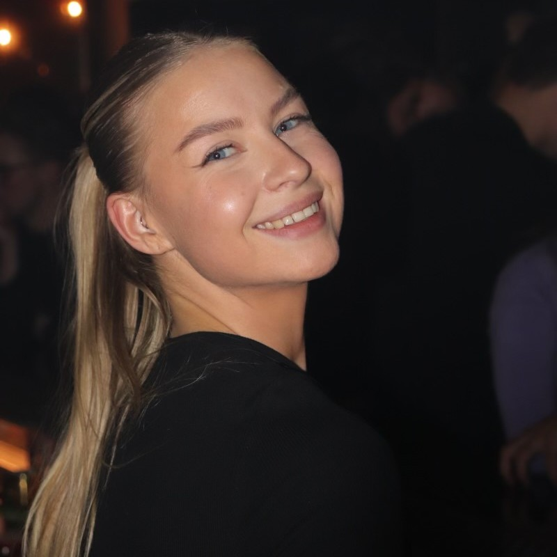
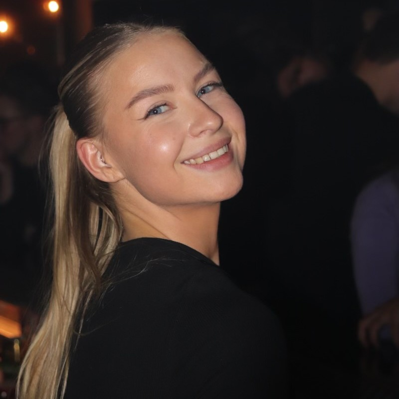

About Me
Hi, my name is Lisa Upperud. I am currently studying to become a Fullstack Java Developer at Stockholms Tekniska Institut.
Hi, my name is Lisa Upperud. I am currently studying to become a Fullstack Java Developer at Stockholms Tekniska Institut.
At age 24 I discovered my interest for programming thorugh a C# course. I have always been a very structured and organized person which translated well with programming and a new hobby was born.
I've always been very creative and found that programming was a great creative outlet for me. I applied to STI in spring of 2024 and later enrolled in september that same year.
Since I started my education I've started seeing the world through different eyes and constantly see ways to improve the world around me, both for myself and society, which I think is the most existing about codeing.
I like to spend my free time with my family and friends. I prefer to have a structured day-to-day life, so aside from studing and working part-time in the restaurant business I like to strength train and cook.
A favorite interest of mine is reading, something I've been doing since I was 2 and a half years old. I really enjoy non-fiction books, mainly about neuro-science, health and biology. My favorite authors and educators include Andrew Huberman, Anders Hansen and Robert Sapolsky. I find that learing about the human mind and body is crucial to our well-being as people and constatly learining about the science behind us humans help keep me motivated to life a healthy and productive life.